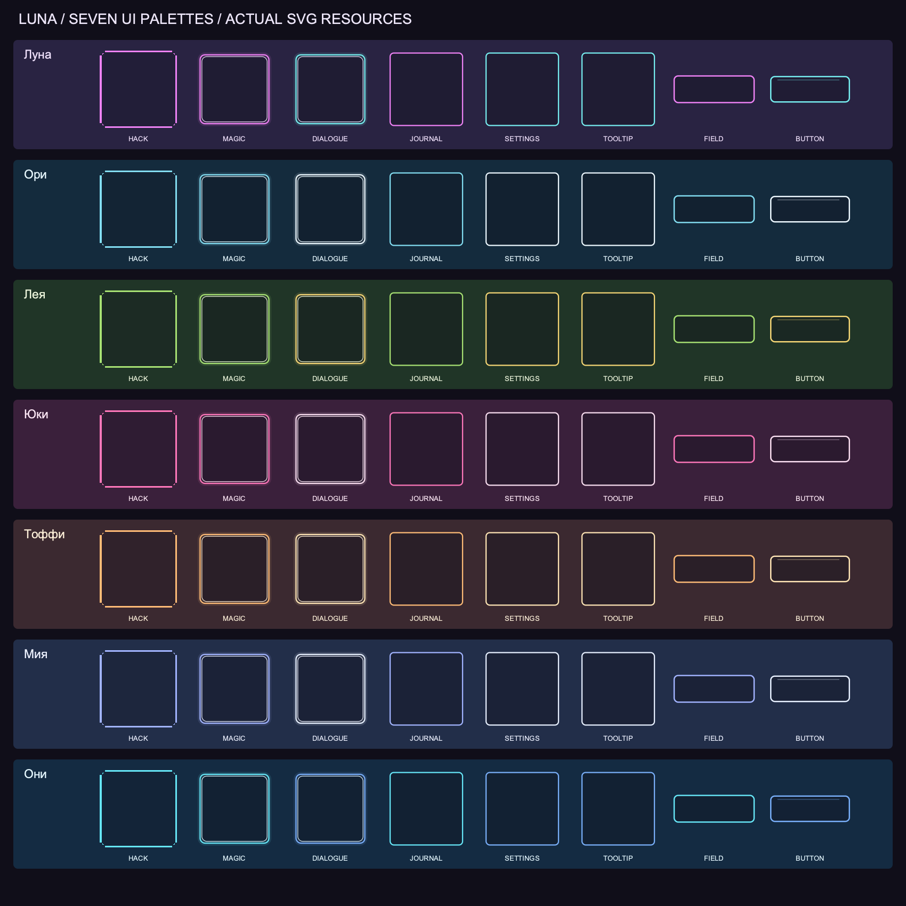

LUNA — артефакты и недостающие иконки
Локальная художественная галерея по канону main, 5c514f5. Игровые механики не подключены. Руна и Призма сохранены в одобренном виде. Артефакты имеют собственные цвета, независимо от активного героя.
Артефакты
21 отдельная 2D-иллюстрация. Один прозрачный мастер каждого предмета используется как концепт и иконка; это не 3D-модель и не отдельная перерисовка иконки.
Сценарные иконки
180 пиктограмм в семи цветовых наборах: эффекты, зелья, составы, эмоты, заклинания, восприятие и мета-интерфейс.
Проверка цветов основных интерфейсов
Из существующих SVG: окно взлома, магия, диалоги, журнал, настройки, подсказки и контролы. Данные проверки — theme-audit.json.

Документация · Каталог артефактов · Покрытие сценарных иконок · Запросы генерации